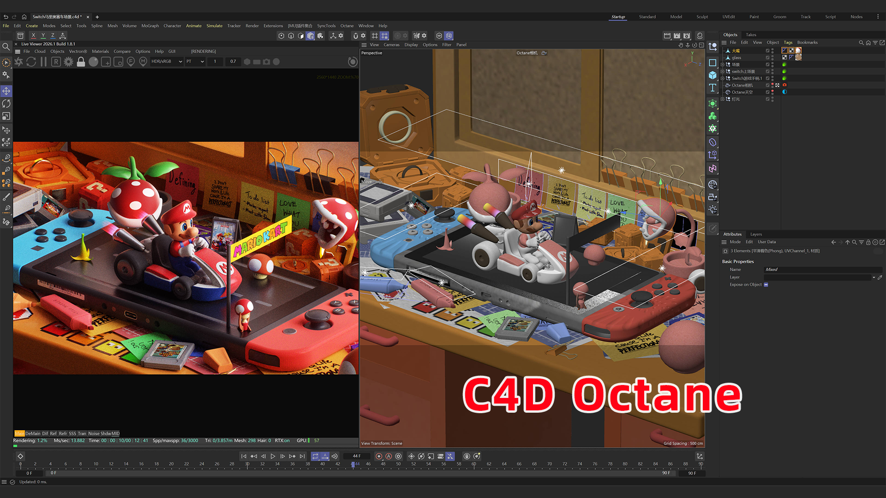
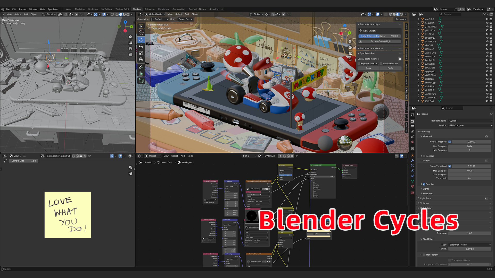
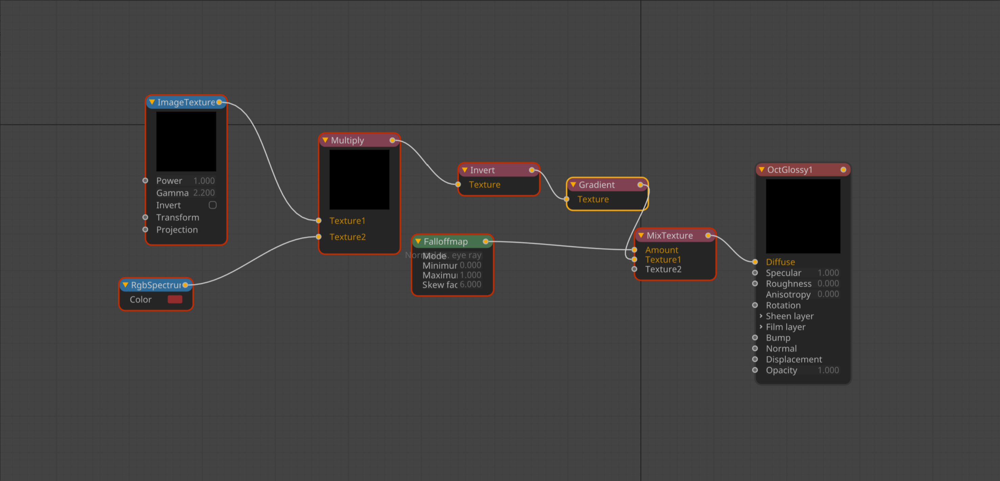
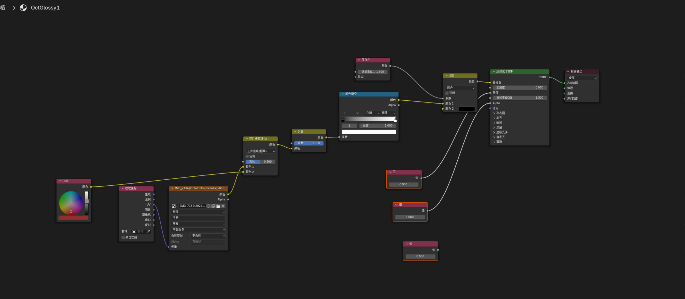
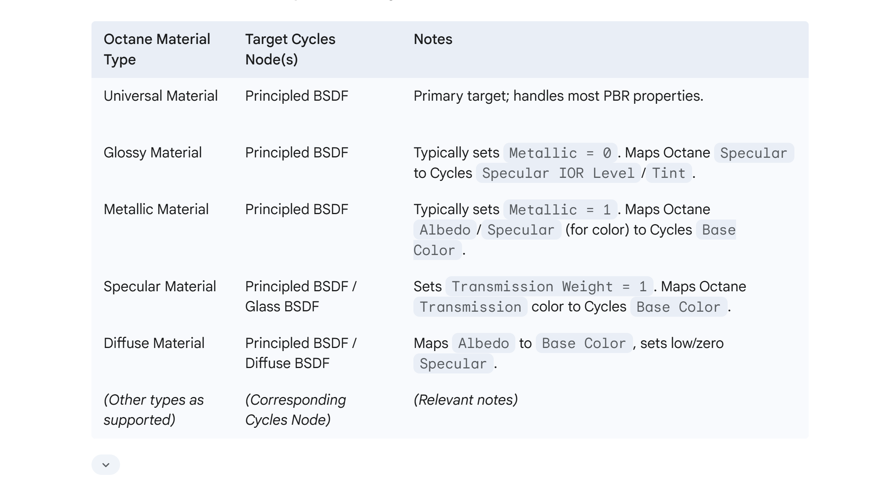
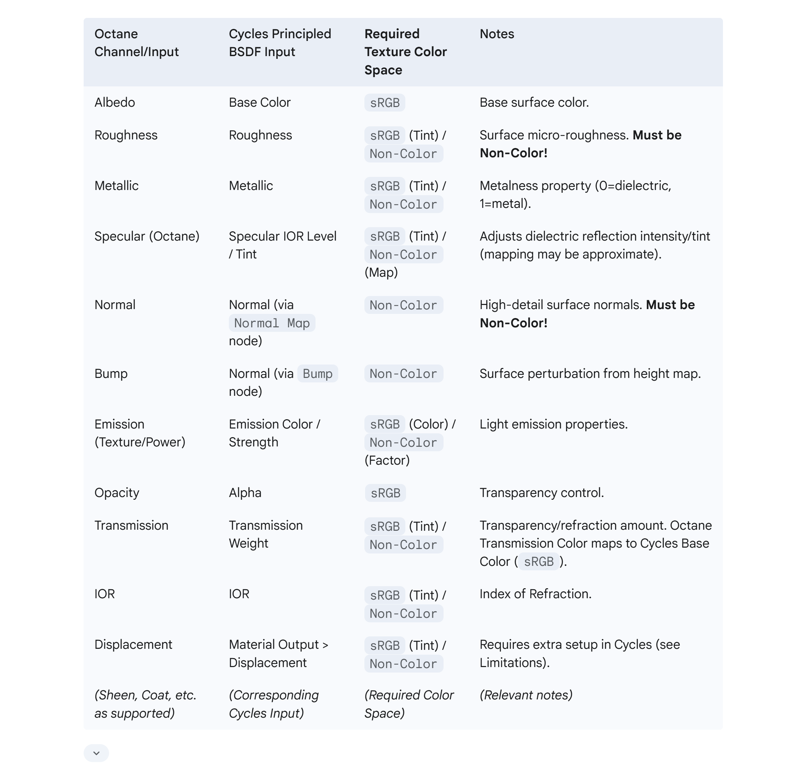
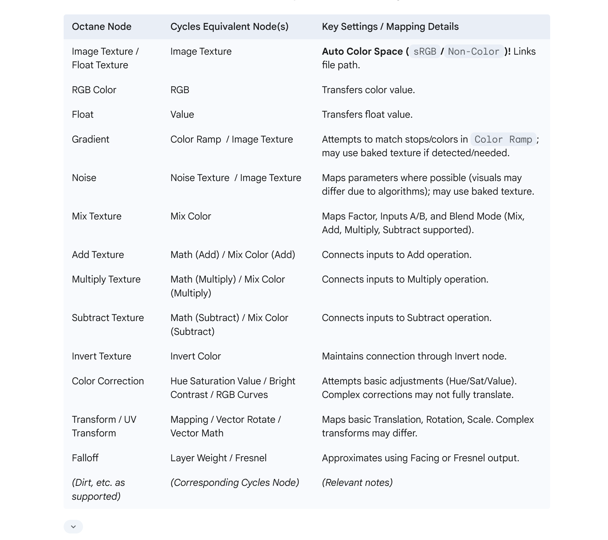

告别重复性工作！ Import Octane Material Pro 帮助您即时将 Octane 材质导入 Blender！


停止浪费时间重建材质
您是否厌倦了在 Blender Cycles 中手动重建 Cinema 4D Octane 材质这一繁琐耗时的过程？
您是否希望能够无缝将高质量的 C4D 资产传输到 Blender，而不必花费数小时处理节点和排除故障？
C4D/Octane 和 Blender 之间的跨平台工作流面临重大挑战，尤其是材质转换方面。 手动转换复杂的节点设置、确保 PBR 准确性和匹配视觉保真度通常令人沮丧且容易出错。
隆重推出 Import Octane Material Pro — 您的终极解决方案！
这个强大而智能的 Blender 插件弥合了 C4D/Octane 和 Blender Cycles 之间的差距。 它自动化材质转换，智能将 Octane 的核心属性和着色器网络映射到 Cycles 等效项，保留您的艺术愿景并节省宝贵的创作时间。
🎁 特别优惠！
立即购买 SyncTools — 免费获得 Import Octane Material Pro！
将您的跨平台 3D 工作流提升到新的水平。
购买 SyncTools 即可获得 Import Octane Material Pro 作为额外赠品——无需额外费用！
✅ 使用 SyncTools 实现无缝资产传输
✅ 使用 Import Octane Material Pro 实现即时材质转换
✅ 节省数小时的手动工作
✅ 最大化您的创作自由
限时优惠——不要错过！
👉 [立即获取 SyncTools]




核心价值
✅ 节省数小时繁琐的手动工作。
✅ 专注于真正重要的事——您的创意！
解锁无缝工作流：核心优势与功能
-
加速您的流程： 在将 C4D 项目或资产迁移到 Blender 时大幅减少材质设置时间。
-
保留艺术意图： 忠实转换 Octane 材质的原始外观和质感。
-
消除 PBR 错误： 自动颜色空间处理防止常见纹理问题。
-
专注创意： 花更多时间创作，减少排除节点故障的时间。
-
对艺术家友好： 直观、易用的界面——无需编码。
功能深度解析
核心材质类型转换
-
支持关键 Octane 材质： Universal, Glossy, Metallic, Specular，Diffuse
-
智能转换为 Blender 的 Principled BSDF 节点。
智能 PBR 通道映射
自动连接：
| Octane 通道 | Blender 输入 |
|---|---|
| Albedo / Diffuse→ | 基础 颜色 |
| Roughness→ | Roughness |
| Metallic→ | Metallic |
| 正常→ | 正常 (via 正常 映射 node) |
| Bump→ | 正常 (via Bump node) |
| Emission→ | Emission 颜色 & Strength |
| 不透明度→ | 透明度 |
| Transmission→ | Transmission & 基础 颜色 |
| IOR→ | IOR |
| Displacement→ | 材料 输出 > Displacement |
颜色空间自动检测并分配（sRGB 或 Non-Color）——确保 PBR 正确性！
常用着色器节点转换
-
支持 Octane 节点如 Image Texture、RGB Color、Noise、Mix、Multiply、Invert、Color Correction、Transform 等。
-
在可能的情况下，程序化节点会转换为 Cycles 等效节点，或建议烘焙处理。
置换贴图支持
-
将 Octane 置换贴图连接到 Blender 的置换系统。
-
需要在 Blender 中正确设置细分和材质以确保正常显示。
可选：SyncTools 集成
-
如果您拥有 SyncTools，可以直接从 C4D 复制粘贴到 Blender，实现更快的工作流程。
技术深入解析：转换映射表
Octane 材质类型 → Cycles 节点映射

Octane 通道 → Blender BSDF 输入

常用 Octane 节点 → Blender 节点

简单步骤：工作流指南
标准 FBX 工作流
-
在 C4D 中完成 Octane 材质设置。
-
从 C4D 导出 FBX 文件。
-
将 FBX 导入到 Blender。
-
选择导入的对象，打开 Import Octane Material Pro 面板，点击"导入 Octane 材质"。
-
验证结果，如有必要进行微调。
使用 SyncTools 的加速工作流
-
确保 SyncTools 在 C4D 和 Blender 中都已运行。
-
在 C4D 中复制选中的资产。
-
直接粘贴到 Blender 中。
-
材质将被即时导入并转换。
重要注意事项
-
不保证完美的 1:1 匹配：由于引擎差异，可能会出现细微变化。
-
复杂材质可能需要微调：特别是那些大量使用程序化设置的材质。
-
建议：烘焙复杂的程序化纹理以获得最佳视觉准确度。
-
支持的 Blender 版本：2.93 → 4.3+
-
包含：配套 C4D 导出脚本
-
未来更新：包含在内并持续进行！
停止与节点斗争，开始创作！
您准备好重新获得数小时的创作时间并简化 C4D 到 Blender 的工作流程了吗？
立即获取 Import Octane Material Pro — 专注于您最擅长的事：创作精彩的艺术作品！
✅ 投资效率。
✅ 投资创意。
Steps to Use
方法 1: Using FBX 导出
-
导出 the Scene from C4D:
- Open your project in Cinema 4D and ensure all Octane materials are properly set up.
- 导出 the scene as an FBX file:
- Go to
文件 > 导出and chooseFBX 文件. - 制作 sure the export settings include geometry, materials, and texture paths.
- Go to
-
导入 into Blender:
- Open Blender and load your project or create a new scene.
- 导入 the FBX file:
- Go to
文件 > 导入 > FBX, then select and load your exported file.
- Go to
-
运行 the 插件:
- Ensure the Import Octane Material Pro plugin is installed and enabled:
- Go to
编辑 > 偏好设置 > 插件, then install and enable the plugin.
- Go to
- Open the plugin panel in Blender and click "导入 Octane 材料s". The plugin will automatically match the geometry and Octane materials.
- Ensure the Import Octane Material Pro plugin is installed and enabled:
-
Check and 调整:
- 验证 the materials and textures are correctly applied.
- 制作 further adjustments as needed, such as tweaking lights or fine-tuning shaders.
方法 2: Using SyncTools for 快速 导入 (Recommended)
-
启用 SyncTools:
- Ensure that the SyncTools plugin is installed and running in both C4D and Blender.
-
复制 in C4D:
- Select the 3D asset(s) you want to transfer along with their Octane materials.
- 右-click and choose "复制", or use the appropriate shortcut to copy the selection.
-
粘贴 in Blender:
- Open the SyncTools panel in Blender.
- Click "粘贴" or use the corresponding shortcut. The 3D asset(s) will be imported into Blender, complete with geometry, materials, and textures.
-
快速的 Check:
- Review the imported asset to ensure the materials and geometry are intact.
- If there are minor issues, simply make slight adjustments manually.
- file_1.zip3.6 MB
- 导入_Octane_材料_Pro_Official.zip1.0 KB